जब हम एक ऐसी दुनिया में रहते हैं जहाँ देशों के बीच अक्सर युद्ध, सीमा विवाद, और वैचारिक संघर्ष की स्थिति बनी रहती है, तो हमें एक ऐसी निष्पक्ष संस्था की ज़रूरत महसूस होती है जो इन विवादों को शांति से सुलझा सके। **संयुक्त राष्ट्र संघ (UN)** इस दिशा में दुनिया का सबसे बड़ा और महत्वपूर्ण संगठन है।
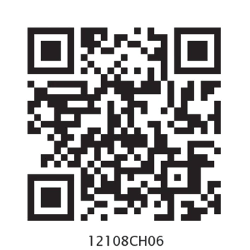
संयुक्त राष्ट्र का आधिकारिक प्रतीक चिन्ह (Official Emblem of the UN)
संयुक्त राष्ट्र संघ के इस प्रतीक चिन्ह में दुनिया का मानचित्र बना हुआ है, जिसके दोनों तरफ जैतून (Olive) की पत्तियां हैं। जैतून की पत्तियां पूरी दुनिया में वैश्विक शांति (World Peace) का प्रतीक मानी जाती हैं।
कई बार आलोचक पूछते हैं कि क्या ये संगठन वाकई काम करते हैं? इसका जवाब प्रसिद्ध दूसरे यूएन महासचिव डैग हैमरशोल्ड (Dag Hammarskjöld) के शब्दों में है:
"संयुक्त राष्ट्र का गठन मानवता को स्वर्ग पहुँचाने के लिए नहीं, बल्कि उसे नरक से बचाने के लिए किया गया था।"
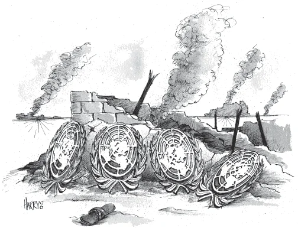
एनसीईआरटी कार्टून: लेबनान संकट 2006 (UN Emblem as Target):
कार्टून का विवरण: इस कार्टून में संयुक्त राष्ट्र संघ के प्रतीक चिन्ह को एक निशाने (Target) के रूप में दिखाया गया है जिस पर बमबारी हो रही है।
कार्टून का संदेश: यह 2006 के लेबनान संकट के दौरान इजरायली हमले को रोकने में संयुक्त राष्ट्र की नाकामी को दर्शाता है, जहाँ यूएन महासभा के प्रस्तावों के बावजूद युद्ध 33 दिनों तक चलता रहा।
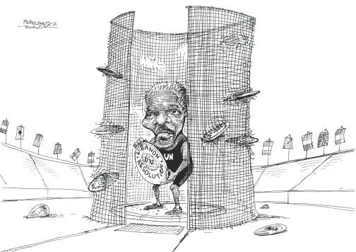
एनसीईआरटी कार्टून: बातचीत बनाम युद्ध (Jaw-Jaw vs War-War):
कार्टून का विवरण: कार्टून में विभिन्न देशों की टिप्पणियों और यूएन में चल रही लंबी बहसों को दिखाया गया है।
कार्टून का संदेश: चर्चित उक्ति 'बातचीत करना युद्ध करने से बेहतर है' (Jaw-jaw is better than war-war) के माध्यम से यह संदेश दिया गया है कि भले ही यूएन में निर्णय लेने में देरी होती है, लेकिन यह देशों को सीधे युद्ध में जाने से रोकने का एक महत्वपूर्ण मंच है।
अंतरराष्ट्रीय संगठनों की आवश्यकता के मुख्य कारण निम्नलिखित हैं:
- युद्ध को रोकना (Preventing Wars): देशों के बीच विवादों को सुलझाने के लिए एक कूटनीतिक मंच (Diplomatic Forum) प्रदान करना ताकि छोटी सी तकरार बड़े युद्ध में न बदल जाए।
- वैश्विक सहयोग बढ़ाना (Global Cooperation): कुछ वैश्विक समस्याएं ऐसी हैं जिन्हें कोई एक देश अकेले हल नहीं कर सकता (जैसे जलवायु परिवर्तन, वैश्विक तापमान बढ़ना, आतंकवाद, गरीबी और कोरोना जैसी महामारियां)। इसके लिए साझा मंच आवश्यक है।
- साझा नियम और दिशा-निर्देश: अंतरराष्ट्रीय व्यापार, समुद्री सीमा के नियम, नागरिक उड्डयन और स्वास्थ्य मानकों को तय करने के लिए सार्वभौमिक नियम बनाना।
प्रथम विश्वयुद्ध (1914-1918) की भयानक तबाही के बाद दुनिया के नेताओं ने शांति के लिए **'लीग ऑफ नेशंस' (League of Nations)** की स्थापना की थी। लेकिन यह संगठन अत्यधिक कमजोर था और 1939 में शुरू हुए द्वितीय विश्वयुद्ध को रोकने में पूरी तरह विफल रहा।
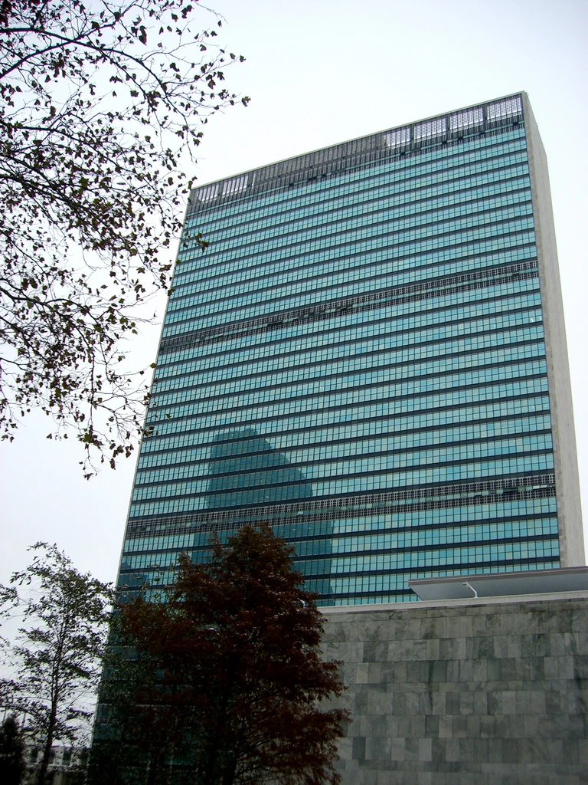
संयुक्त राष्ट्र मुख्यालय, न्यूयॉर्क (UN Headquarters in New York):
संयुक्त राष्ट्र संघ की मुख्य प्रशासनिक इमारत जहाँ सुरक्षा परिषद और महासभा के सत्र आयोजित किए जाते हैं।
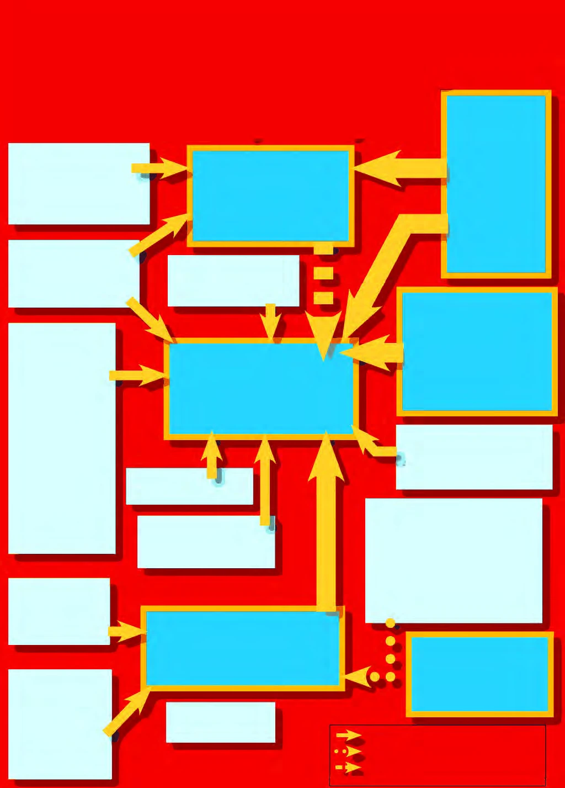
एनसीईआरटी चार्ट: संयुक्त राष्ट्र संघ की संगठनात्मक संरचना (Structure of the UN):
चार्ट का विवरण: संयुक्त राष्ट्र संघ के छह प्रमुख अंगों और उनसे संबद्ध विशिष्ट संस्थाओं (एजेंसियों) के प्रशासनिक संबंधों को दर्शाता आधिकारिक प्रवाह आरेख (Flowchart)।
स्थापना (Birth of the UN): द्वितीय विश्वयुद्ध के तुरंत बाद 24 अक्टूबर 1945 को संयुक्त राष्ट्र संघ की स्थापना की गई। आरंभ में इसके चार्टर पर 51 देशों ने हस्ताक्षर किए थे। **भारत 30 अक्टूबर 1945** को इसके संस्थापक सदस्य के रूप में शामिल हुआ। वर्तमान में इसके सदस्यों की संख्या 193 है।
- विश्व में international शांति, सुरक्षा और स्थिरता बनाए रखना।
- विभिन्न राष्ट्रों के बीच समानता और मित्रवत संबंधों को बढ़ावा देना।
- मानवाधिकारों और बुनियादी स्वतंत्रताओं की रक्षा करना।
- गरीबी, अशिक्षा और महामारियों जैसी अंतरराष्ट्रीय समस्याओं के समाधान के लिए वैश्विक सहयोग सुनिश्चित करना।
संयुक्त राष्ट्र संघ एक विशाल प्रशासनिक मशीनरी है जो छह मुख्य अंगों के माध्यम से वैश्विक गतिविधियों को नियंत्रित करती है।
महासभा को अक्सर 'विश्व की संसद' कहा जाता है। इसमें हर सदस्य देश को एक समान वोट देने का अधिकार है (चाहे वह छोटा द्वीप देश हो या कोई बड़ी महाशक्ति)।
- सदस्यता: वर्तमान में इसमें 193 सदस्य देश शामिल हैं।
- कार्य: वैश्विक नीतियों पर चर्चा, नए सदस्यों का प्रवेश, सुरक्षा परिषद के अस्थायी सदस्यों का चुनाव, और संयुक्त राष्ट्र के बजट को मंजूरी देना।
यह यूएन का सबसे शक्तिशाली और निर्णय लेने वाला अंग है। इसे पूरी दुनिया का **'ग्लोबल पुलिसमैन' (Global Policeman)** कहा जाता है क्योंकि इसके फैसले सदस्य देशों पर कानूनी रूप से बाध्यकारी होते हैं।
संरचना: इसमें कुल 15 सदस्य होते हैं।
- 5 स्थायी सदस्य (P-5): अमेरिका, रूस, ब्रिटेन, फ्रांस और चीन। इनके पास वीटो (Veto Power) का अधिकार होता है।
- 10 अस्थायी सदस्य: ये महासभा द्वारा दो वर्ष के कार्यकाल के लिए चुने जाते हैं। भारत कई बार इसका अस्थायी सदस्य रह चुका है।
वीटो पावर (Veto Power): यदि सुरक्षा परिषद के 15 सदस्यों में से 14 सदस्य किसी प्रस्ताव के पक्ष में हों, लेकिन केवल एक स्थायी सदस्य असहमत होकर वीटो कर दे, तो वह प्रस्ताव खारिज हो जाता है।
सचिवालय संयुक्त राष्ट्र का प्रशासनिक कार्यालय है। इसके कार्यों का संचालन महासचिव (Secretary-General) की देखरेख में होता है।
एंटोनियो गुटेरेस (António Guterres)
पुर्तगाल के पूर्व प्रधानमंत्री जो 1 जनवरी 2017 से संयुक्त राष्ट्र के 9वें महासचिव (Secretary-General) हैं। महासचिव संयुक्त राष्ट्र का मुख्य प्रशासनिक अधिकारी और पूरी दुनिया में इसका चेहरा होता है।
यह यूएन का मुख्य न्यायिक अंग है जो देशों के बीच होने वाले कानूनी और सीमा विवादों का फैसला करता है।
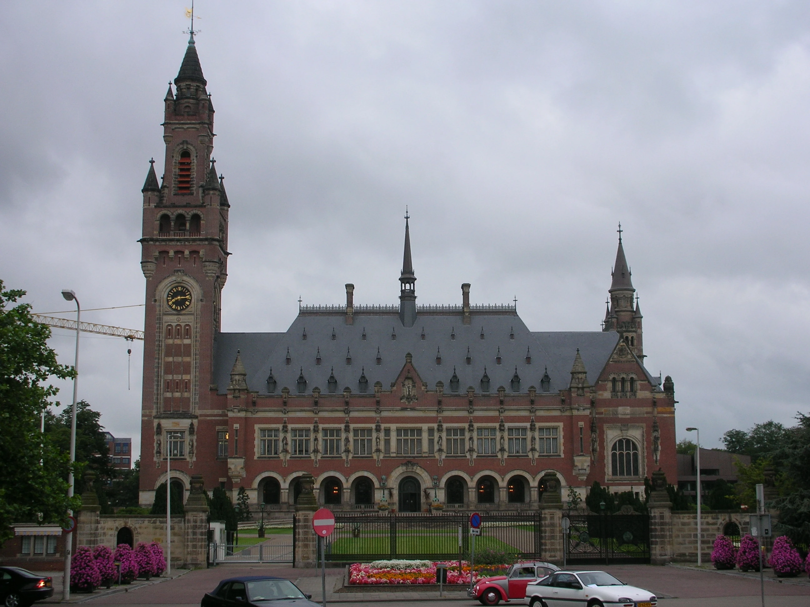
पीस पैलेस, द हेग (Peace Palace, The Hague):
नीदरलैंड के द हेग शहर में स्थित यह भव्य महल अंतरराष्ट्रीय न्यायालय (ICJ) का मुख्यालय है।
- आर्थिक और सामाजिक परिषद (ECOSOC): 54 सदस्यों वाला यह अंग वैश्विक गरीबी उन्मूलन, शिक्षा, मानव विकास और सामाजिक कल्याण के कार्यक्रमों का समन्वय करता है।
- न्यास परिषद (Trusteeship Council): दूसरे विश्वयुद्ध के बाद 11 न्यास क्षेत्रों (ट्रस्ट टेरिटरीज) की देखरेख के लिए बनाया गया था। 1994 में पलाऊ के स्वतंत्र होने के बाद इसके कार्यों को निलंबित कर दिया गया।
1945 में जब संयुक्त राष्ट्र बना था, तो दुनिया वैसी नहीं थी जैसी आज है। तब शीत युद्ध चल रहा था, और आज दुनिया 'एकध्रुवीय' या 'बहुध्रुवीय' बनने की ओर बढ़ रही है। इसलिए, यूएन की संरचना और कार्यप्रणाली में बदलाव की मांग उठ रही है।
सबसे बड़ा विवाद सुरक्षा परिषद के विस्तार को लेकर है। दुनिया चाहती है कि P-5 (स्थायी सदस्यों) की संख्या बढ़ाई जाए।
P-5 (Permanent Five): अमेरिका, रूस, चीन, ब्रिटेन और फ्रांस। ये वे देश हैं जिन्होंने दूसरे विश्वयुद्ध में जीत हासिल की थी।
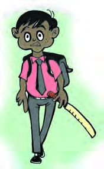
एनसीईआरटी कार्टून: लोकतंत्र और सुधार की आवश्यकता (Democracy & UN Reforms):
कार्टून का विवरण: कार्टून में एक पिंजरे और तानाशाहों के संदर्भ में सुधारों की व्याख्या की गई है।
कार्टून का संदेश: यह दर्शाता है कि शीत युद्ध के बाद यूएन को अधिक लोकतांत्रिक और जवाबदेह बनाने की आवश्यकता है ताकि सदस्य देशों के आंतरिक लोकतंत्र और अधिकारों की रक्षा हो सके।
- प्रतिनिधित्व की कमी: वर्तमान सुरक्षा परिषद में एशिया, अफ्रीका और दक्षिण अमेरिका जैसे महाद्वीपों का उचित प्रतिनिधित्व नहीं है।
- वीटो पावर का दुरुपयोग: अक्सर स्थायी सदस्य अपनी वीटो पावर का इस्तेमाल अपने निजी स्वार्थों के लिए करते हैं, जिससे शांति प्रक्रिया रुक जाती है।
कई विशेषज्ञों का मानना है कि यूएन को शांति और सुरक्षा के अलावा अन्य महत्वपूर्ण क्षेत्रों पर अपना ध्यान ज़्यादा केंद्रित करना चाहिए:
- मानवीय सहायता: अकाल, भूकंप और महामारियों के समय यूएन की भूमिका तेज़ होनी चाहिए।
- पर्यावरण और स्वास्थ्य: जलवायु परिवर्तन और डब्लू.एच.ओ. (WHO) के माध्यम से स्वास्थ्य सेवाओं को सुदृढ़ बनाना।
- शांति स्थापना (Peace Keeping): युद्धग्रस्त क्षेत्रों में शांति सेनाओं की भूमिका को और अधिक प्रभावी बनाना।
एक बड़ा सवाल: क्या सुरक्षा परिषद के स्थायी सदस्यों की संख्या बढ़ाने से यूएन अधिक लोकतांत्रिक हो जाएगा? या क्या इससे निर्णय लेने की प्रक्रिया धीमी हो जाएगी? यह पूरी दुनिया के लिए एक बड़ी चर्चा का विषय है।
आज यूएन केवल युद्ध रोकने तक सीमित नहीं है, बल्कि वह दुनिया भर में **लोकतंत्र** (Democracy) और **मानवाधिकारों** (Human Rights) की रक्षा के लिए नए संस्थानों के गठन की भी मांग कर रहा है।
प्रभुसत्ता का संकोच: कई देशों को डर है कि यूएन में सुधार के नाम पर उनकी स्वतंत्रता (Sovereignty) कम की जा सकती है, जिससे वे अपने निर्णय स्वतंत्र रूप से नहीं ले पाएंगे।
भारत दुनिया का सबसे बड़ा लोकतंत्र (The World's Largest Democracy) है और वह लंबे समय से संयुक्त राष्ट्र सुरक्षा परिषद (UNSC) में स्थायी सदस्यता (Permanent Membership) की मांग कर रहा है। भारत के पास इसके लिए बहुत मजबूत तर्क और योग्यताएं हैं।
भारत क्यों स्थायी सदस्य बनना चाहिए? इसके मुख्य कारण निम्नलिखित हैं:
- आबादी: भारत दुनिया की सबसे अधिक आबादी वाला देश है। यूएन में इतनी बड़ी आबादी का प्रतिनिधित्व न होना एक बड़ी कमी है।
- लोकतंत्र: भारत एक सफल और स्थिर लोकतंत्र है, जो यूएन के लोकतांत्रिक मूल्यों का सम्मान करता है।
- अर्थव्यवस्था: भारत दुनिया की सबसे तेज़ गति से बढ़ती हुई प्रमुख अर्थव्यवस्थाओं में से एक है।
- शांति सेना में योगदान: भारत यूएन के शांति अभियानों (Peacekeeping Missions) में सबसे ज्यादा सैनिक भेजने वाले देशों में शामिल है।
- संस्थापक सदस्य: भारत यूएन के जन्म से ही इसका हिस्सा रहा है और उसने इसके सभी नियमों का पालन किया है।
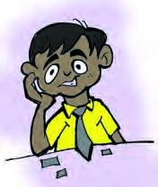
एनसीईआरटी कार्टून: सुरक्षा परिषद की सीढ़ी (Climbing the UNSC Ladder):
कार्टून का विवरण: कार्टून में विभिन्न देशों को सुरक्षा परिषद के द्वार की ओर जाती एक बड़ी सीढ़ी पर चढ़ते हुए और स्थायी देशों के प्रभाव को दर्शाया गया है।
कार्टून का संदेश: यह दर्शाता है कि कैसे अन्य देश (जैसे भारत, जापान) सुरक्षा परिषद में शामिल होने के लिए प्रयासरत हैं, तथा वर्तमान P-5 सदस्य अपने एकाधिकार को बचाने की कोशिश कर रहे हैं।
शांति स्थापना (Peacekeeping): संयुक्त राष्ट्र द्वारा विवादित क्षेत्रों में शांति और व्यवस्था बनाए रखने के लिए सदस्य देशों से सैनिकों की मांग की जाती है। भारत इसमें सबसे विश्वसनीय साझेदार रहा है।
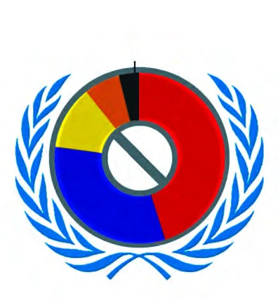
एनसीईआरटी आरेख: वीटो पावर का उपयोग (Use of Veto Power by P-5):
चार्ट का विवरण: सोवियत संघ/रूस (135 बार), अमेरिका (84 बार), ब्रिटेन (32 बार), फ्रांस (18 बार), और चीन (11 बार) द्वारा वीटो पावर के उपयोग को दर्शाता आधिकारिक बार आरेख। यह सुरक्षा परिषद की असमानता को उजागर करता है।
इतनी योग्यताओं के बावजूद, कुछ देश भारत की सदस्यता का विरोध करते हैं:
- पाकिस्तान: भारत का पड़ोसी देश पाकिस्तान हमेशा भारत के स्थायी सदस्य बनने का विरोध करता है।
- चीन: चीन सुरक्षा परिषद का स्थायी सदस्य है और वह अक्सर भारत की उम्मीदवारी को रोकने की कोशिश करता है।
- अन्य दावेदार: जर्मनी, जापान और ब्राज़ील जैसे देश भी स्थायी सदस्यता की मांग कर रहे हैं, जिससे यह मामला और जटिल हो गया है।
निष्कर्ष: यदि सुरक्षा परिषद में विस्तार होता है, तो भारत का दावा सबसे मजबूत रहेगा। भारत की सदस्यता न केवल भारत के लिए, बल्कि पूरी दुनिया के लिए फायदेमंद होगी।
सोवियत संघ के पतन के बाद, अमेरिका दुनिया की एकमात्र महाशक्ति बन गया। अमेरिका का दबदबा (Hegemony) न केवल पूरी दुनिया पर है, बल्कि संयुक्त राष्ट्र संघ पर भी उसका गहरा प्रभाव देखा जाता है
इसके कुछ मुख्य कारण निम्नलिखित हैं:
- आर्थिक योगदान: यूएन के बजट में अमेरिका सबसे ज्यादा हिस्सा देता है। अमेरिका के बिना यूएन का चलना मुश्किल हो सकता है।
- स्थान: संयुक्त राष्ट्र का मुख्यालय (Headquarters) अमेरिका के न्यूयॉर्क शहर में स्थित है। इससे अमेरिका को संगठन की गतिविधियों पर नज़र रखने में आसानी होती है।
- वीटो पावर: अमेरिका के पास वीटो पावर है, जिसका इस्तेमाल वह अक्सर अपने हितों की रक्षा के लिए करता है।
- सांस्कृतिक और सैन्य प्रभाव: दुनिया के अधिकांश देशों पर अमेरिका का काफी प्रभाव है, जिससे वह कई फैसलों को अपने पक्ष में मोड़ने की ताकत रखता है।
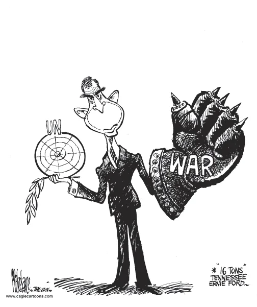
एनसीईआरटी कार्टून: संयुक्त राष्ट्र और अमेरिकी सैन्य वर्चस्व (US Hegemony over the UN):
कार्टून का विवरण: कार्टून में एक विशाल अमेरिकी सैनिक को एक हाथ में संयुक्त राष्ट्र के लोगो और दूसरे हाथ में हथियार दिखाते हुए पेश किया गया है।
कार्टून का संदेश: यह दर्शाता है कि जब अमेरिका कूटनीतिक रूप से (दाएं हाथ से) बात नहीं मनवा पाता, तो वह सैन्य बल (बाएं हाथ) के उपयोग से पीछे नहीं हटता, जिससे यूएन का महत्व कम होता है।
वर्चस्व (Hegemony): किसी एक देश का दुनिया भर में आर्थिक, सैन्य और political रूप से हावी होना। 1991 के बाद से अमेरिका इसी वर्चस्व का आनंद ले रहा है।
यह एक विवादास्पद मुद्दा है। कई बार यूएन ने अमेरिका के फैसलों का विरोध किया है (जैसे इराक युद्ध के समय), लेकिन वह उसे पूरी तरह से रोकने में विफल रहा क्योंकि अमेरिका के पास बहुत ज़्यादा शक्ति है।
निष्कर्ष: भले ही यूएन अमेरिका को पूरी तरह से नियंत्रित नहीं कर सकता, लेकिन वह अमेरिका की तानाशाही पर कुछ हद तक अंकुश ज़रूर लगाता है। यूएन एक ऐसा मंच है जहाँ दुनिया के देश अमेरिका के गलत फैसलों की आलोचना कर सकते हैं।
क्या अमेरिका के वर्चस्व के समय यूएन की ज़रूरत है? हाँ, क्योंकि अमेरिका भी जानता है कि उसे अपनी कुछ गतिविधियों के लिए पूरी दुनिया के देशों की सहमति की ज़रूरत होती है, जो उसे केवल यूएन ही दिला सकता है।
संयुक्त राष्ट्र संघ के विभिन्न अंगों के अतिरिक्त, दुनिया में कुछ स्वायत्त एजेंसियां भी हैं जो वैश्विक अर्थव्यवस्था, व्यापार और सुरक्षा के नियम तय करती हैं।
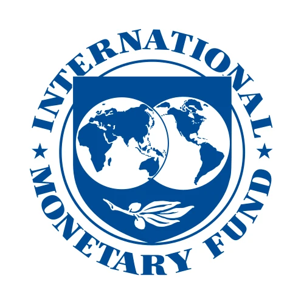
अंतरराष्ट्रीय मुद्रा कोष (International Monetary Fund - IMF)
1944 में स्थापित यह संस्था वैश्विक वित्तीय प्रणाली की देखरेख करती है। यह उन सदस्य देशों को अल्पकालिक वित्तीय सहायता प्रदान करती है जो भुगतान संतुलन (Balance of Payments) के गंभीर संकट से जूझ रहे होते हैं। इसके वोटिंग अधिकारों पर अमेरिका और विकसित देशों का तीव्र प्रभाव है।
विश्व बैंक मुख्य रूप से विकासशील और गरीब देशों को आर्थिक विकास, मानवीय बुनियादी ढांचे (शिक्षा, स्वास्थ्य), कृषि विकास और सड़क-बिजली जैसी परियोजनाओं के लिए दीर्घकालिक ऋण और अनुदान प्रदान करता है।
महत्वपूर्ण अंतर: IMF अल्पकालिक वित्तीय संकट को ठीक करने के लिए ऋण देता है, जबकि विश्व बैंक दीर्घकालिक ढांचागत विकास और गरीबी उन्मूलन के लिए ऋण देता है।
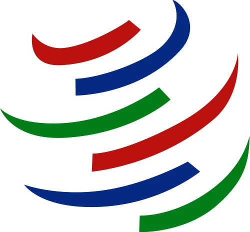
विश्व व्यापार संगठन (World Trade Organization - WTO)
1 जनवरी 1995 को इसकी स्थापना **'गैट' (GATT - General Agreement on Tariffs and Trade)** के उत्तराधिकारी के रूप में की गई। यह पूरी दुनिया में बहुपक्षीय व्यापार के नियम बनाता है और वैश्विक व्यापार को बाधा रहित (Free Trade) बनाने के लिए काम करता है।
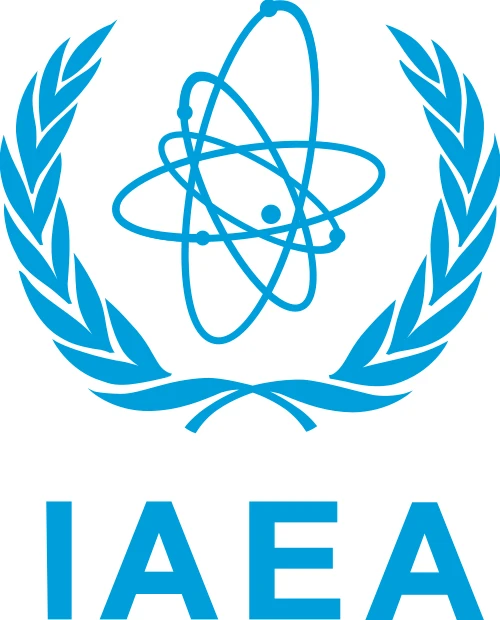
अंतरराष्ट्रीय परमाणु ऊर्जा एजेंसी (IAEA - International Atomic Energy Agency)
इस संस्था की स्थापना 1957 में अमेरिका के राष्ट्रपति ड्वाइट आइजनहावर के "अणु शांति के लिए" (Atoms for Peace) प्रस्ताव के तहत हुई थी। इसका उद्देश्य परमाणु ऊर्जा के केवल असैन्य और शांतिपूर्ण कार्यों (जैसे चिकित्सा और बिजली उत्पादन) को बढ़ावा देना तथा देशों को परमाणु बम बनाने से रोकना है।
वैश्विक व्यवस्था में शांति और मानवाधिकारों की रक्षा का कार्य केवल सरकारों तक सीमित नहीं है, बल्कि कई **गैर-सरकारी संगठन (NGOs)** स्वतंत्र रूप से रिपोर्टें प्रकाशित कर सरकारों पर मानवाधिकारों के सम्मान के लिए दबाव बनाते हैं।
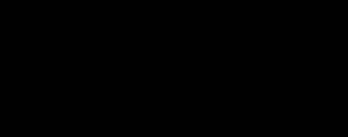
एमनेस्टी इंटरनेशनल (Amnesty International)
यह एक वैश्विक स्वयंसेवी मानवाधिकार संस्था है। यह पूरी दुनिया में मानवाधिकारों के हनन पर शोध करती है और रिपोर्ट प्रकाशित करती है। इसका मुख्य उद्देश्य राजनीतिक बंदियों की रिहाई सुनिश्चित करना, यातना और मृत्युदंड के खिलाफ अभियान चलाना है। इसकी रिपोर्टें वैश्विक जनमत तैयार करने में अत्यंत प्रभावशाली होती हैं।
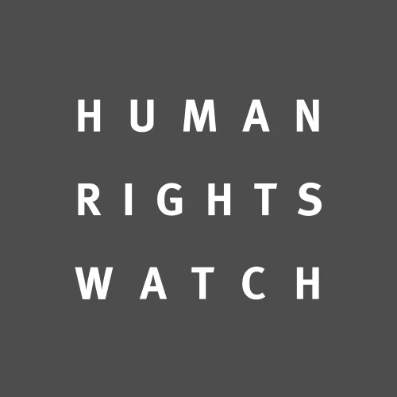
ह्यूमन राइट्स वॉच (Human Rights Watch)
यह एक अन्य अत्यंत महत्वपूर्ण अंतरराष्ट्रीय एनजीओ है जो पूरी दुनिया में मानवाधिकारों के हनन की जांच और वकालत करता है। यह बाल श्रम, बच्चों को जबरन सैनिक बनाने, युद्ध अपराधों, और महिलाओं के खिलाफ हिंसा जैसे गंभीर मुद्दों पर अपनी रिपोर्ट के माध्यम से दुनिया भर की मीडिया का ध्यान आकर्षित करता है।
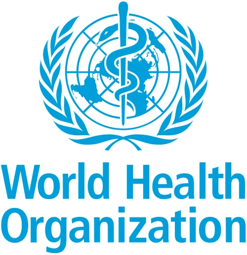
विश्व स्वास्थ्य संगठन (World Health Organization - WHO)
7 अप्रैल 1948 को स्थापित यह संयुक्त राष्ट्र की एक विशेष एजेंसी है जो अंतरराष्ट्रीय स्तर पर जन स्वास्थ्य (Public Health) को बढ़ावा देती है, महामारियों (जैसे कोरोना, पोलियो) के खिलाफ वैश्विक अभियान चलाती है, और विभिन्न स्वास्थ्य मानकों को तय करती है।
आज की दुनिया 1945 की तुलना में बहुत बदल चुकी है। क्या संयुक्त राष्ट्र संघ आज भी उतना ही प्रासंगिक (Relevant) है? इस पर दुनिया भर के विद्वानों की अलग-अलग राय है, लेकिन एक बात निश्चित है—यूएन के बिना दुनिया और भी खतरनाक होती।
भविष्य में भी अंतरराष्ट्रीय संगठनों की भूमिका बढ़ती ही जाएगी, क्योंकि:
- वैश्विक समस्याएं: जलवायु परिवर्तन (Climate Change), परमाणु हथियार और महामारियां (जैसे कोविड-19) ऐसी समस्याएं हैं जिनका समाधान कोई एक देश अकेले नहीं कर सकता।
- गरीब देशों की आवाज़: विकासशील और गरीब देशों के लिए यूएन एकमात्र ऐसा मंच है जहाँ उनकी बात सुनी जाती है।
- शांति स्थापना: गृहयुद्धों and अंतरराष्ट्रीय संघर्षों को रोकने के लिए यूएन की मध्यस्थता आज भी सबसे ज्यादा विश्वसनीय मानी जाती है।
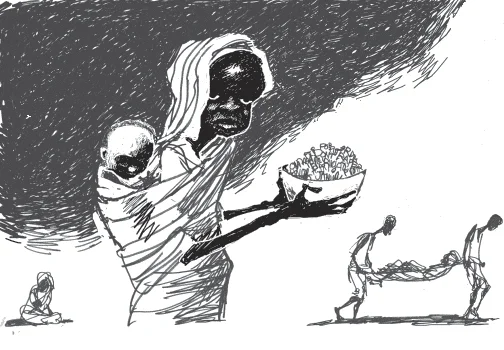
एनसीईआरटी कार्टून: शांति स्थापना की लाचारी - दारफुर संकट (Helplessness of UN in Darfur Crisis):
कार्टून का विवरण: कार्टूनिस्ट पेट बेगली (Pat Bagley) द्वारा बनाया गया यह कार्टून सूडान के दारफुर प्रांत में मानवीय संकट को दिखाता है, जिसमें पीड़ित व्यक्ति लाचार पड़ा है और संयुक्त राष्ट्र की निष्क्रियता पर टिप्पणी की गई है।
कार्टून का संदेश: यह दर्शाता है कि सुरक्षा परिषद के स्थायी देशों के बीच राजनीतिक मतभेदों और देरी के कारण कैसे संयुक्त राष्ट्र बड़ी मानवीय आपदाओं और नरसंहारों को रोकने में असफल हो जाता है।
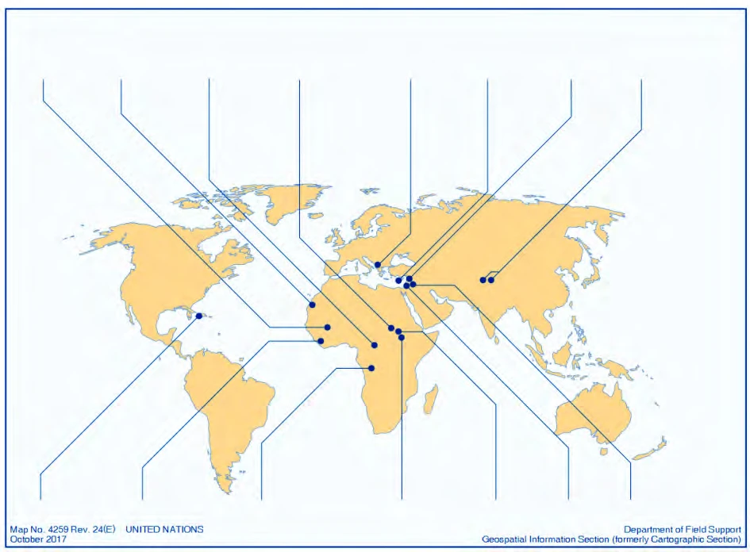
एनसीईआरटी मानचित्र: संयुक्त राष्ट्र शांति स्थापना अभियान (Map of UN Peacekeeping Missions):
मानचित्र का विवरण: विश्व भर के संघर्षग्रस्त क्षेत्रों (जैसे लेबनान, साइप्रस, लाइबेरिया, कांगो, दक्षिण सूडान आदि) में संयुक्त राष्ट्र द्वारा चलाए जा रहे विभिन्न शांति अभियानों की भौगोलिक स्थिति को दर्शाता आधिकारिक मानचित्र।
संदेश: यह मानचित्र वैश्विक शांति स्थापित करने में यूएन की विशाल पहुँच और सदस्य देशों द्वारा भेजे जाने वाले शांति सैनिकों (Peacekeepers) की क्रियाशीलता को दर्शाता है।
प्रासंगिकता (Relevance): किसी संस्था या विचार की वह क्षमता जिसके द्वारा वह वर्तमान समय की चुनौतियों का सामना करने में सक्षम हो। यूएन आज भी दुनिया की सबसे प्रासंगिक संस्था है।
भविष्य में यूएन को अधिक लोकतांत्रिक और प्रभावी बनाने के लिए कुछ बड़े कदम उठाने होंगे:
- संरचनात्मक बदलाव: सुरक्षा परिषद का विस्तार करना और उभरती हुई शक्तियों (जैसे भारत) को स्थान देना।
- आर्थिक आत्मनिर्भरता: यूएन को अपनी आय के स्रोतों के लिए केवल एक-दो अमीर देशों पर निर्भर नहीं रहना चाहिए।
- वीटो पावर का सीमित उपयोग: वीटो की शक्ति को कम या नियंत्रित करना ताकि महत्वपूर्ण शांति फैसले रुके नहीं।
"संयुक्त राष्ट्र पूरी दुनिया की एक साझी विरासत है। इसे सफल बनाना केवल यूएन का काम नहीं, बल्कि दुनिया के हर देश की जिम्मेदारी है।"
अध्याय का सार यह है कि international संगठन एक 'परफेक्ट' समाधान नहीं हैं, लेकिन वे उस अराजकता और युद्ध से कहीं बेहतर हैं जो उनकी अनुपस्थिति में होगा। सहयोग ही एकमात्र रास्ता है और यूएन उस सहयोग का प्रधान केंद्र है।
अराजकता (Anarchy): ऐसी स्थिति जहाँ कोई केंद्रीय नियंत्रण न हो और हर कोई अपनी मनमानी करे। अंतरराष्ट्रीय राजनीति में यूएन इस अराजकता को रोकने का काम करता है।
बोर्ड परीक्षा में अंतरराष्ट्रीय संगठनों के मुख्यालयों और पी-5 देशों से जुड़े मैप प्रश्न अक्सर पूछे जाते हैं:
मैप पर पहचानें:
- संयुक्त राष्ट्र संघ का मुख्यालय कहाँ स्थित है: न्यूयॉर्क (अमेरिका)।
- विश्व का एकमात्र देश जिसके पास सुरक्षा परिषद की वीटो पावर है और वह एशिया में स्थित है: चीन।
- यूरोपीय देश जिनके पास स्थायी सदस्यता है: फ्रांस और ब्रिटेन।
- अंतरराष्ट्रीय न्यायालय का मुख्यालय: द हेग (नीदरलैंड)।
- आईएमएफ और विश्व बैंक के मुख्यालय: वॉशिंगटन डीसी (अमेरिका)।
इन प्रश्नों का अभ्यास आपको बोर्ड परीक्षा के लिए पूरी तरह तैयार कर देगा:
2019-2023 के प्रमुख प्रश्न:
- Q1. सुरक्षा परिषद की स्थायी सदस्यता के लिए भारत के दावों के पक्ष में कोई तीन तर्क दें। (4 अंक)
- Q2. 'संयुक्त राष्ट्र संघ' का निर्माण किस घटना के बाद हुआ और इसका मुख्य उद्देश्य क्या था? (4 अंक)
- Q3. वीटो पावर (Veto Power) का क्या अर्थ है? यह सुरक्षा परिषद के स्थायी सदस्यों को क्यों दी गई? (2 अंक)
- Q4. शीत युद्ध के बाद संयुक्त राष्ट्र संघ में सुधारों की आवश्यकता क्यों महसूस की गई? (6 अंक)
2014-2018 के प्रमुख प्रश्न:
- Q5. अंतरराष्ट्रीय मुद्रा कोष (IMF) और विश्व बैंक (World Bank) के कार्यों में अंतर स्पष्ट करें। (4 अंक)
- Q6. क्या संयुक्त राष्ट्र संघ अमेरिका के वर्चस्व को नियंत्रित करने में सफल रहा है? तर्क सहित उत्तर दें। (6 अंक)
- Q7. 'एमनेस्टी इंटरनेशनल' और 'ह्यूमन राइट्स वॉच' किस प्रकार मानवाधिकारों की रक्षा करते हैं? (4 अंक)
- Q8. अंतरराष्ट्रीय परमाणु ऊर्जा एजेंसी (IAEA) के मुख्य कार्यों का वर्णन करें। (2 अंक)
- मुख्यालय: न्यूयॉर्क और वाशिंगटन डीसी में स्थित संस्थानों को अच्छी तरह याद रखें।
- सुरक्षा परिषद: P-5 देशों के नाम और उनकी वीटो पावर पर विशेष ध्यान दें।
- सुधार: शीत युद्ध के बाद आए बदलावों और भारत के दावों को रट लें।
- मानवाधिकार: एमनेस्टी इंटरनेशनल और ह्यूमन राइट्स वॉच की रिपोर्टों के महत्व को समझें।
अध्याय 4 का मास्टर कोर्स संपन्न। अब आप बोर्ड परीक्षा के लिए 100% तैयार हैं!